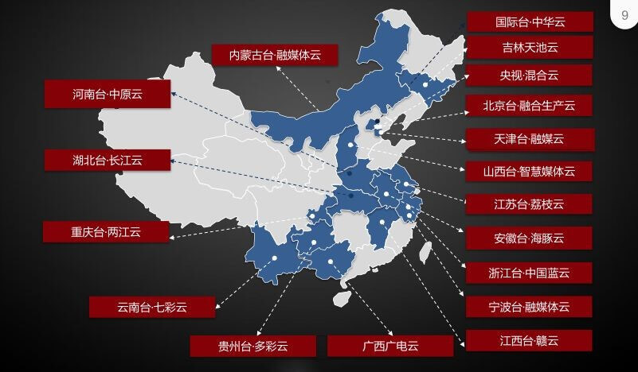
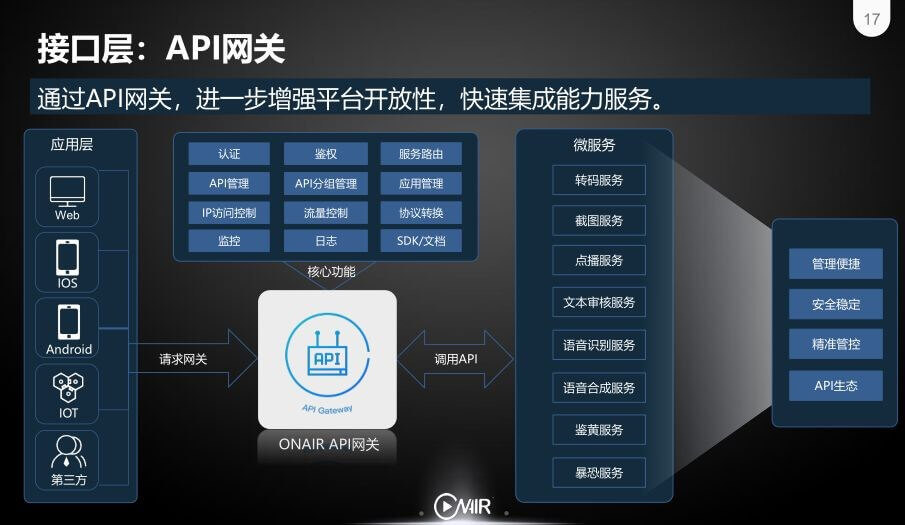
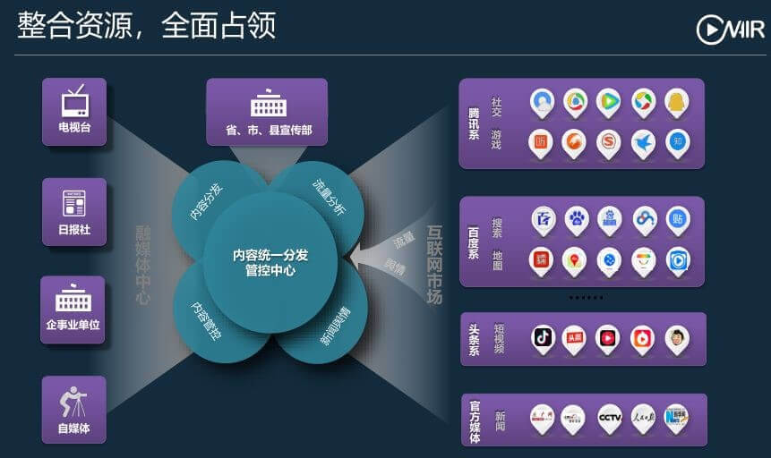
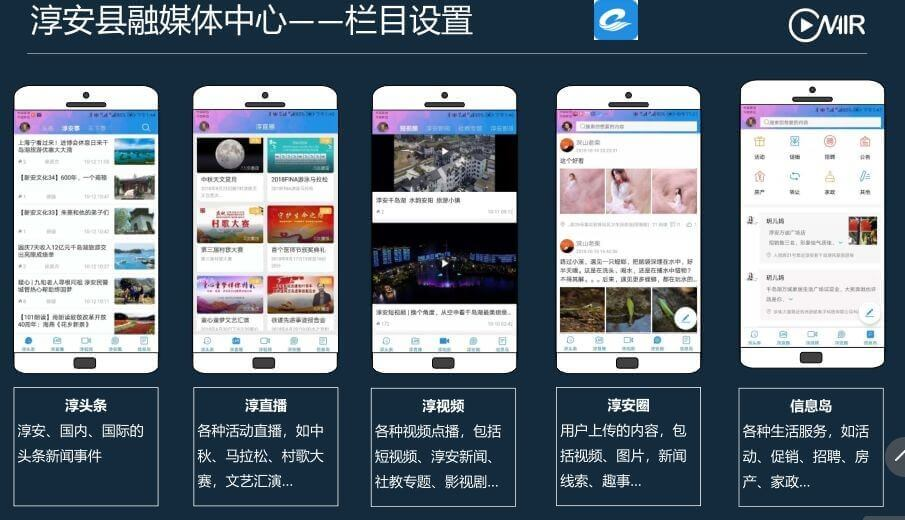

为媒体服务，阳光云视助力媒体价值提升助力媒体价值提升！
10月24日-10月27日，第26届媒体融合技术研讨会（ICTC2018）在杭州举行。阳光云视副总经理董全武博士受邀在“媒体融合论坛”及“智慧广电与县级融媒体中心建设论坛”发表精彩演讲。
在媒体融合论坛中，董全武博士以《懂你，才懂价值——为融合服务，实现媒体价值最大化》为题发表演讲。

演讲从媒体运营体现媒体价值到媒体价值的变现模式都有详细阐述。结合众多PaaS的项目落地，以荔枝云、七彩云案例讲述深度融合阶段的媒体运营情况展开，讲述了打造融合运营区域生态，通过抱团取暖，共建、共享、共赢等方式，汇聚多渠道流量，让整体媒体访问量显著增加。

云视结合诸多实践，对媒体云平台进行了全新升级，引入API网关，进一步增强平台的开放性，快速的集成服务和应用（含第三方），让API的管理更加便捷，严格权限管理、流量控制更精准。
在智慧广电与县级融媒体中心建设论坛中，董全武博士以《以运营促发展——县级融媒体如何落地》为题发表演讲。
切实的从四方面谈到了落地方法的具体操作：
·整合资源：建设一个统一的融媒体平台，打造统一的入口
·强化管控：建立多层分级管理机制，打造可管可控的舆论中心、媒体中心
·全面占领：全面渗透互联网，实现有序对接并做到可管可控
·关注民生：打造本地化的民生平台，吸引群众的关注，并将其转化为平台忠实用户
通过整合多方资源，推动信息的管控和分发建立起内容统一分发管控中心。

结合淳安台县融媒体建设进行了详细阐述，讲解了县级融媒体如何借助APP发力融媒体建设。淳安县广播电视台融媒体平台，基于公有云（专属云）进行搭建，构建一次采集、多元生产、多端发布的融媒体生态圈。以“淳安手机台”APP、微信公众号、PC网站为新媒体输出端，作为新媒体发布矩阵进行统一管理、运行。同时，县内其他媒体单位作为融媒体平台的租户，进行入驻，将“淳安手机台”APP作为单位新闻信息的一个重要发布端，初步构建了县级媒体机构融媒体生态圈。

除淳安台外，云视已建设多家县级融媒体，其中七彩云平台已有10个地州，27个县入驻。
为媒体服务，阳光云视一直致力于推动媒体融合发展，以习近平总书记为核心的党中央巩固宣传思想阵地、壮大主流思想舆论的重大战略部署。积极创新，助力媒体实现价值最大化！